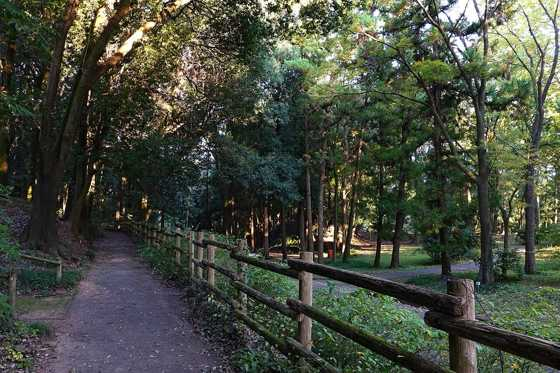
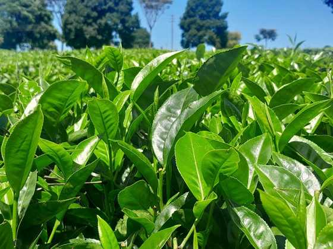
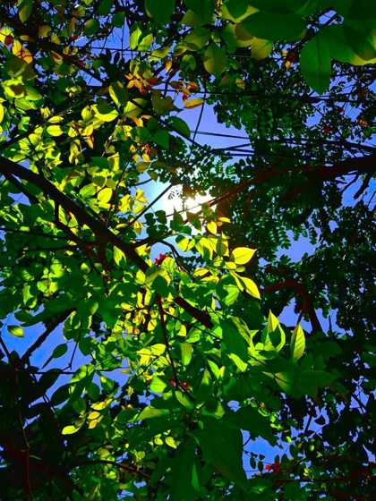
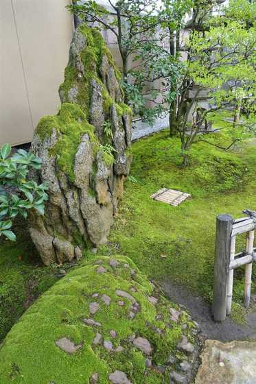
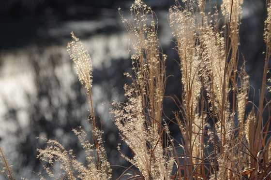
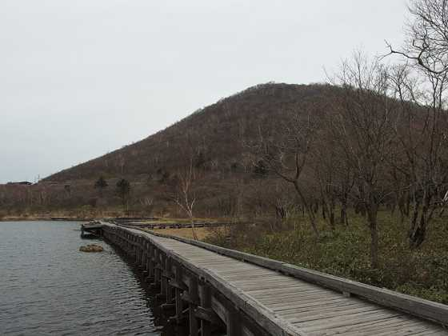
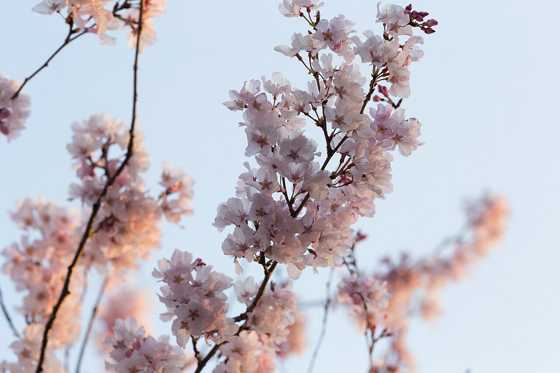

群馬県安中市松井田町入山
ゆっくりして、
豊かな気持ちになれる一杯と一皿を。
軽井沢で約24年。時間と手間をかけたスープのお店が、安中の田舎へ移ってきました。
お店の由来・想い
軽井沢から、松井田の田舎へ。
紹介記事によると、ラ・テイエは長野県軽井沢町で約24年営業してきたカフェで、2025年10月に群馬県安中市へ移転オープンしました。店内は暖炉やアンティークの家具が似合う、あたたかな田舎風の雰囲気と紹介されています。
オーナーは「ゆっくりして、豊かな気持ちになってほしい」と話し、スープを手づくりで、手間と時間をかけて仕込んでいるそうです。
情報源: タウン情報ぐんま(New Open) / 上毛新聞(見出し・冒頭のみ確認) / Instagram
店名の「ラ・テイエ」はフランス語の「la théière(ティーポット)」と同じ響きですが、店名の由来はお店の公表を確認できていません。「ティーポットのように、ゆっくり」という見立ては制作側のイメージです。

メニュー
日替わりのスープと、季節のお菓子。
写真はフリー素材のイメージです。お店で提供しているものそのものではありません。



ティーポットのように
急がず、ことこと。
手間と時間をかけて仕込むスープ、暖炉のそば、古い家具のぬくもり。この静かな時間の流れを、制作側のイメージとして、ティーポットから注ぐ一杯になぞらえました。






口コミ
こんな声が聞かれそうです。
以下は制作側が作成した「イメージ例」です。実在のお客様の声ではありません。
田舎道を走った先にある、静かなお店。スープを飲んだら、肩の力が抜けました。
ご来店のお客様(イメージ例)暖炉のそばの席でゆっくり。デザートまで丁寧で、時間を忘れて過ごせました。
ご来店のお客様(イメージ例)軽井沢の頃から通っていたので、近くで再会できてうれしいです。
ご来店のお客様(イメージ例)アクセス・ご案内
お店のこと(確認できたものだけ)
| 所在地 | 〒379-0305 群馬県安中市松井田町入山517-2 |
|---|---|
| 電話 | 準備中 |
| 営業時間 | 紹介記事では 11:00〜17:00(L.O. 16:30)。変更される場合があります。 |
| 定休日 | 紹介記事では 月〜水曜(年始は休み)。最新情報はInstagramをご確認ください。 |
| ご予約 | 準備中 |
| SNS | Instagram @latheiere0412 |